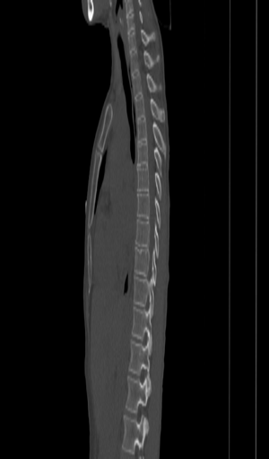
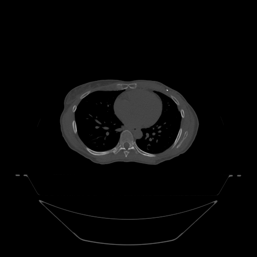
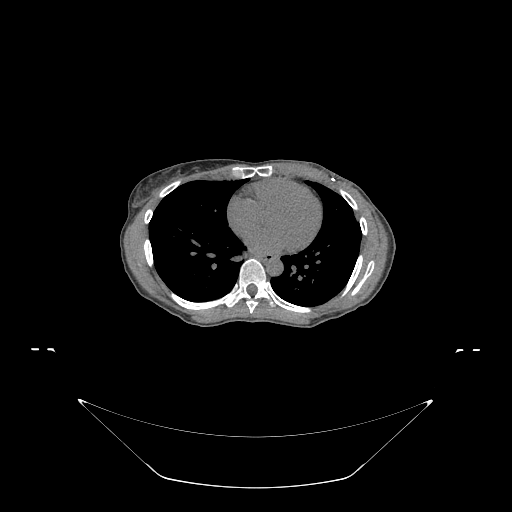

Skeletal treatment — bone metastases, spine SBRT, palliative bone fields — relies on bone-window CT (often with MRI for cord and marrow). The column is read segment by segment: 7 cervical, 12 thoracic, 5 lumbar, then sacrum and coccyx.

Counting vertebrae from a fixed landmark (the C2 dens superiorly or the sacrum inferiorly) on the sagittal view is how the correct level is confirmed — a wrong-level error is among the most serious in spine treatment.
Every typical vertebra shares the same parts — naming them precisely is essential for spine contouring.


Which part of a vertebra connects the body to the lamina and is used to define compartment-based spine CTVs?
The first two cervical vertebrae are atypical: C1 (atlas) is a ring with no body; C2 (axis) carries the odontoid process (dens) projecting upward, around which the atlas rotates. This junction is a common landmark for level-counting and for high-cervical targets.
Because the atlas has no body and the axis has the dens, the craniovertebral junction looks unlike any other level on axial imaging — a reliable anchor when numbering vertebrae downward.
The odontoid process (dens) is a feature of which vertebra?
Within the canal, the cord is wrapped in three meninges (superficial to deep): dura mater, arachnoid mater, and pia mater, with CSF in the subarachnoid space. In adults the cord tapers at the conus medullaris (~L1–L2); below it the cauda equina nerve roots descend.
Precisely identifying the cord (and, for SBRT, a tight cord + setup margin) on each slice is what allows an ablative dose to a vertebral target while respecting cord tolerance.
Skeletal targets are the site where a bony match is the target match — the tumor is in or on the bone.
Why is 6DoF couch correction particularly important for spine SBRT?
You've read the spine on a sagittal reconstruction and axial bone/soft-tissue windows — the parts of a vertebra, the atypical C1/C2, the cord and meninges — and seen why skeletal targets make bony matching the target match, with spine SBRT demanding 6DoF precision and correct-level verification.
Cross-reference: Skeletal Treatment Planning.